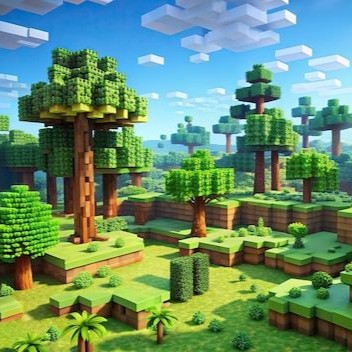
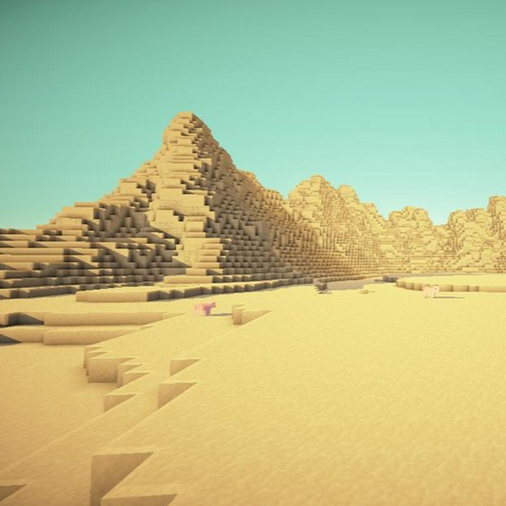
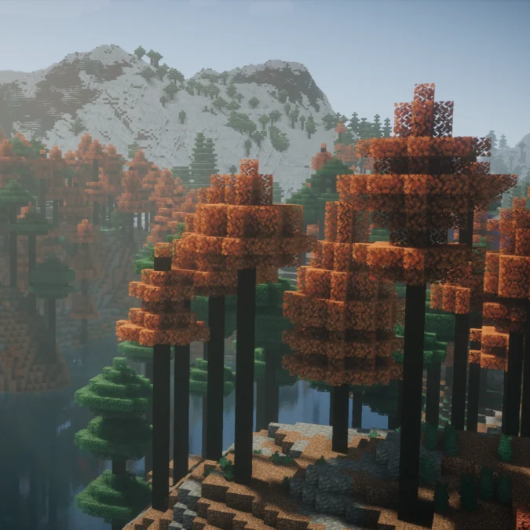
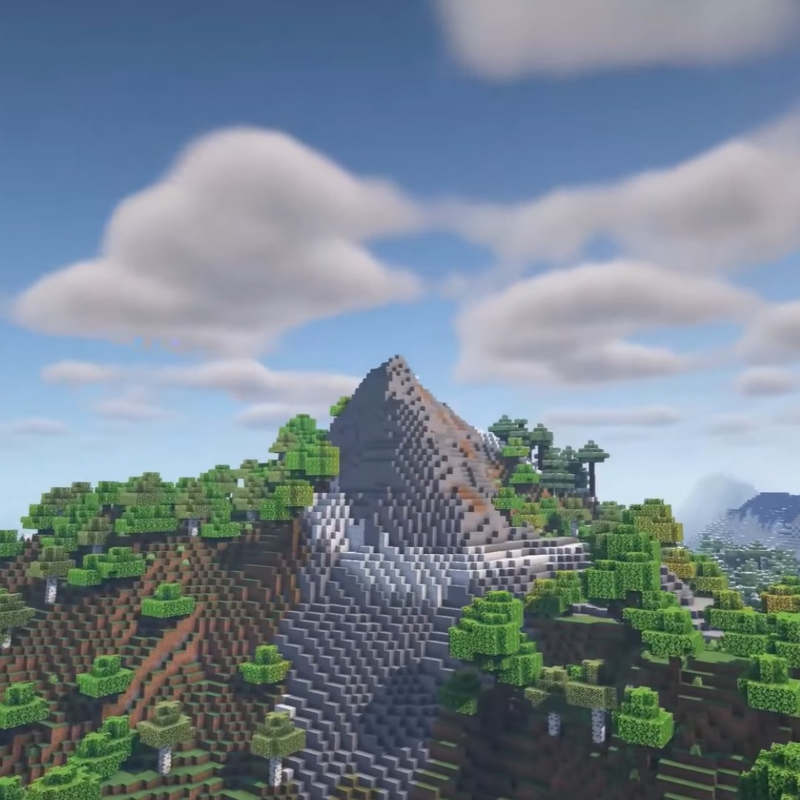
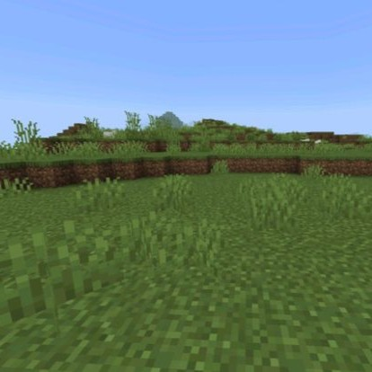
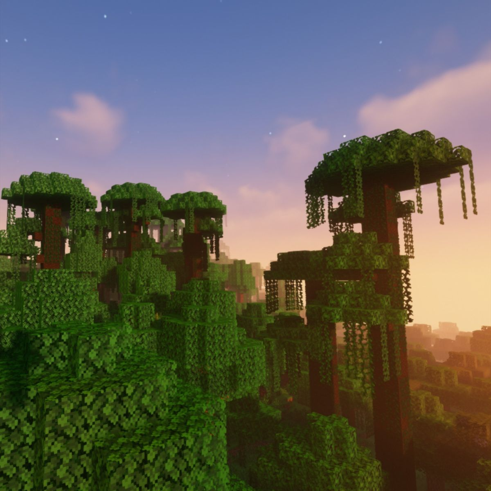
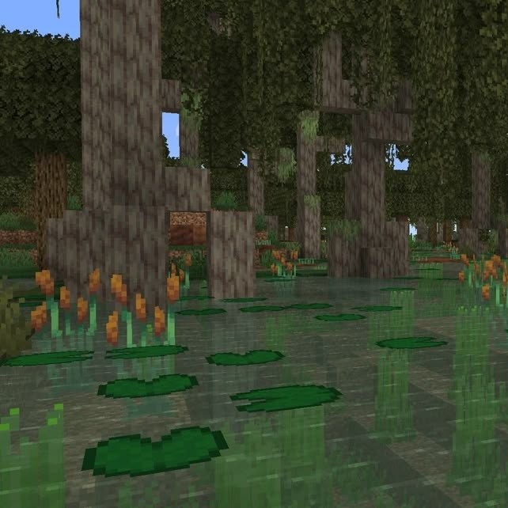
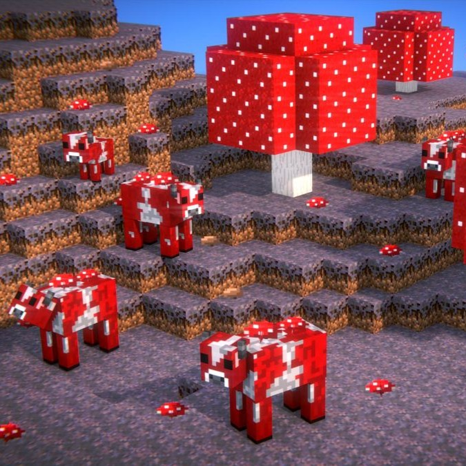

Biomas
Página por Paola Pietropoli
O que são Biomas?
Os biomas são regiões do mundo de Minecraft que possuem características próprias, como clima, vegetação, animais, cores da grama e tipos de blocos. Cada bioma oferece recursos diferentes e influencia a experiência de sobrevivência e exploração.
Principais Biomas
Floresta

Características
Muitas árvores.
Fácil de conseguir madeira.
Possui vacas, ovelhas e porcos.
Ideal para iniciantes.
Deserto

Características
Formado por areia.
Não chove.
Possui templos e vilas.
Cactos e arbustos secos.
Taiga

Características
Clima frio com pinheiros.
Pode haver neve.
Abriga lobos e raposas.
Ótimo para coletar madeira.
Montanhas

Características
Grandes elevações.
Rico em minérios.
Cabras aparecem naturalmente.
Belas paisagens.
Planícies

Características
Terreno plano.
Muitas flores.
Vilas aparecem com frequência.
Ideal para fazendas.
Selva

Características
Árvores gigantes.
Cipós e bambus.
Papagaios, pandas e ocelotes.
Templos escondidos.
Pântano

Características
Águas escuras.
Cipós e vitórias-régias.
Sapos e slimes.
Cabanas de bruxas.
Ilha de Cogumelos

Características
Bioma muito raro.
Cogumelos gigantes.
Mooshrooms.
Sem monstros hostis.
Tabela Comparativa dos Biomas
Bioma
Clima
Animal
Dificuldade
Ideal para
Floresta
Temperado
Vacas e ovelhas
Fácil
Iniciantes
Deserto
Quente
Coelhos
Média
Explorar templos
Taiga
Frio
Lobos
Fácil
Coletar madeira
Montanhas
Frio
Cabras
Difícil
Mineração
Planícies
Temperado
Cavalos
Fácil
Construir
Selva
Tropical
Papagaios
Difícil
Exploração
Pântano
Úmido
Sapos
Média
Encontrar slimes
Ilha de Cogumelos
Temperado
Mooshrooms
Fácil
Sobrevivência
Guia Minecraft
Trabalho da disciplina de Sistemas Operacionais.
Professor: Rodolfo
Equipe:
© 2026 • Guia Minecraft